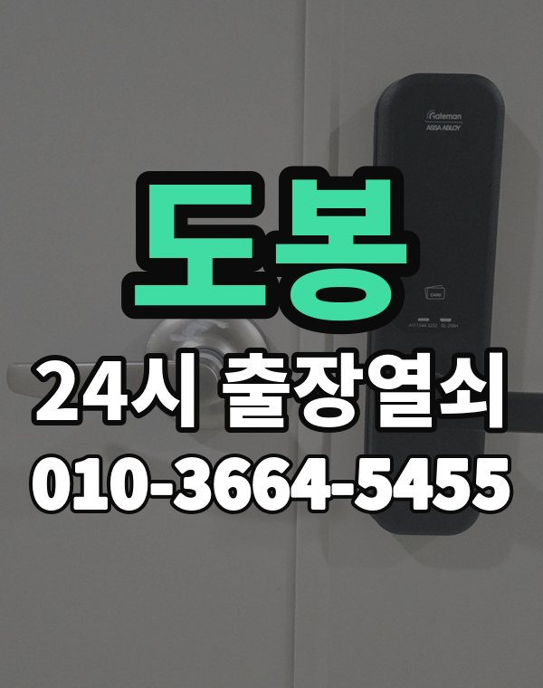

도봉은 이런 곳입니다
도봉구는 창동, 쌍문동, 방학동 아파트 단지와 도봉동 주택가가 이어진 동네입니다.
오래된 아파트가 많아 처음 달았던 도어락을 계속 쓰는 집도 많습니다.

도봉구 출장 가는 동네
- 창동
- 쌍문동
- 방학동
- 도봉동
창동 출장열쇠, 쌍문동 열쇠집처럼 동네 이름으로 찾으셨어도 같은 곳입니다.
적혀 있지 않은 동네도 도봉구 안이면 다 갑니다.
도봉에서 하는 일
도봉에서 전화 주실 때
오래된 도어락은 부품을 구하기 어려울 수 있어 점검 후 수리와 교체 중 맞는 쪽을 말씀드립니다.
문 열기만 원하시면 문 열기만 합니다.
창동역, 쌍문역, 방학역, 도봉산역 근처라고 말씀해 주셔도 위치 잡기가 쉬워집니다.
가까운 역이나 큰 건물, 단지 이름을 같이 알려주세요.
- 도로명 주소나 건물 이름
- 도어락 사진 한 장 (문자로)
- 신분증, 우편물 등 사시는 걸 확인할 것
전화부터 작업까지 순서는 이용안내에 적어 두었습니다.
도봉 출장열쇠 자주 묻는 질문
도봉구 끝쪽 동네도 오시나요?
창동, 쌍문동, 방학동, 도봉동 등 도봉구 전 지역 갑니다. 목록에 없는 동네도 전화로 위치만 알려주시면 됩니다.
도봉 늦은 시간 출장도 되나요?
밤이든 새벽이든 받습니다. 어디인지 들으면 언제쯤 도착하는지 바로 말씀드립니다.
끝내 못 열면 돈은 어떻게 되나요?
못 열면 비용은 받지 않습니다. 비용은 작업 전에 먼저 말씀드리고, 괜찮다고 하시면 시작합니다.
본인 확인은 어떻게 하나요?
거주하시는 분인지 확인한 뒤 엽니다. 신분증이 집 안에 있으면 관리사무소 확인도 됩니다.
도봉 도어락 새로 다는 것도 되나요?
네, 문 열기와 함께 도어락 수리, 설치, 교체도 합니다. 고쳐서 되면 교체는 권하지 않습니다.